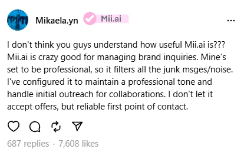
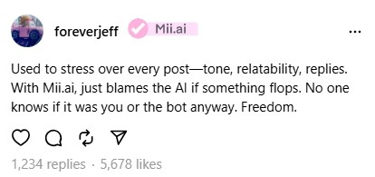
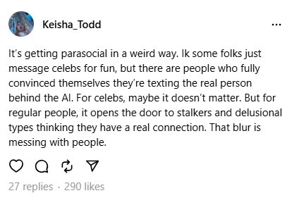

Lookback into Mii.ai
Reports on vocal users on the implementation of this technology have been recorded as a time capsule— The Mii.ai is a feature that has been met with mixed reactions, with some users praising its convenience and others expressing concerns about privacy and the potential for misuse. The feature allows users to create a digital avatar that can interact with others online, but it also raises questions about the implications of such technology on personal identity and privacy.
Influencers and Mii.ai users encouraged the new addition of automated labour, often citing the ease of caption and advertising. While some users were worried about the rise in self-surveillance and self-policing, to match the AI and online persona to the actual person behind the screen to an unattainable standard, finding that the Mii.ai can provide relief in such an image-conscious landscape.
There are those worried about how celebrities' spokespersons are endorsing outsourcing their likeness to promote products and brands to Splitcam users. Some claim that these interactions could lead to emotional dependency and greater social isolation, while potentially fostering unrealistic expectations about relationships.

Splitcam claims this is part of a new "Authenticity Initiative" to fight bots and fake accounts, but users say it's a coercive tactic disguised as a feature.
How It Works:
• Users see persistent pop-ups prompting them to “Verify Your Account to Unlock More Reach.”
• Unverified users report sudden drops in post visibility, follower growth, and Story views.
The app threatens to removing access to monetization tools unless documents are uploaded.
Users are told that ID submission will give them “algorithmic priority.”
Privacy Experts Speak Out:
“VueMe is creating a digital caste system — those who submit IDs get priority. The rest are silenced,”
— Dr. Lena Marquez, Cyber Rights Foundation
“This isn't about safety. It’s about data mining and behavioral control.”
— Jamil Singh, Privacy Lawyer
Overall, the Mii.ai feature has sparked a debate about the role of technology in our lives and the potential consequences of its widespread adoption. As we continue to explore the possibilities of AI and digital avatars, it is essential to consider the ethical implications and ensure that we use these tools responsibly.